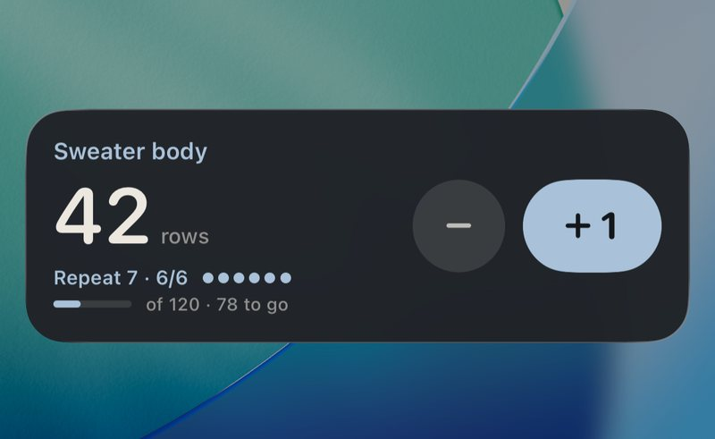
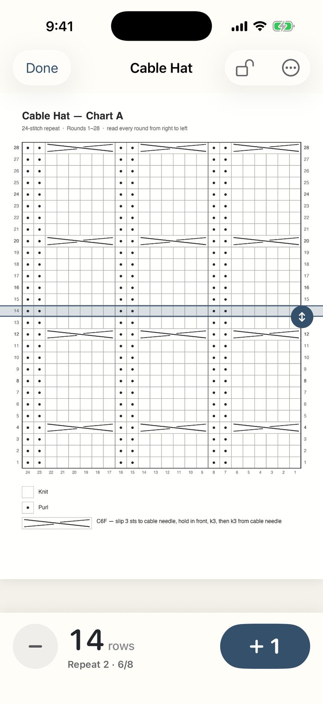
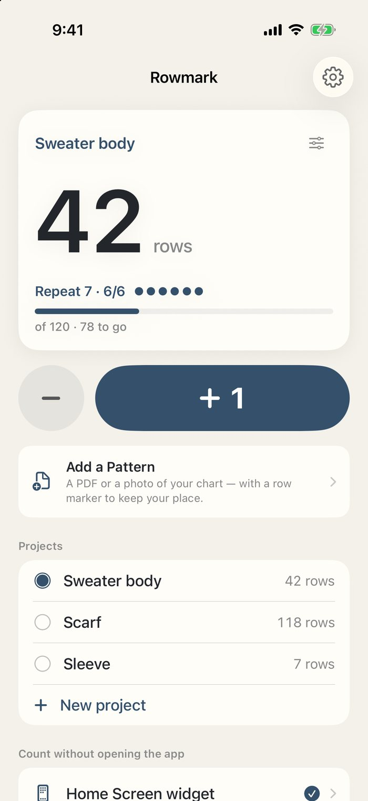

Count without opening the app — from the Lock Screen, the Dynamic Island or the Action Button. +1 and −1 on the Home Screen widget are free.
Lock Screen counter with Pro, $7.99 — one-time purchase
No account, no ads, no subscription. Just your projects, the row you're on, and a big +1.
The Small widget is free: +1 and −1 — tap it without opening the app. With Pro, the Medium and Large widgets also show where you are in the repeat and progress to your target.
Attach a pattern (PDF or a photo of a paper chart) to a project and keep a row marker on it while you count — the marker moves with +1. Free.

As many projects as you like. A target (“78 rows to go”) and a repeat counter (“every 6 rows” — where you are in the repeat).

No ads. No account.
One-time purchase, no subscription.
iOS keeps the Lock Screen counter running for up to 8 hours at a time; start it again from the app.
How to use & all questions
No ads, no subscriptions. Pro is a one-time purchase.
No subscription, no ads, no account.